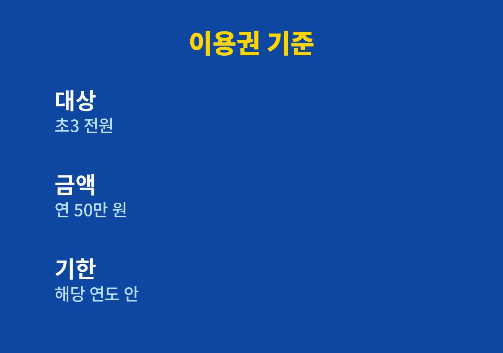
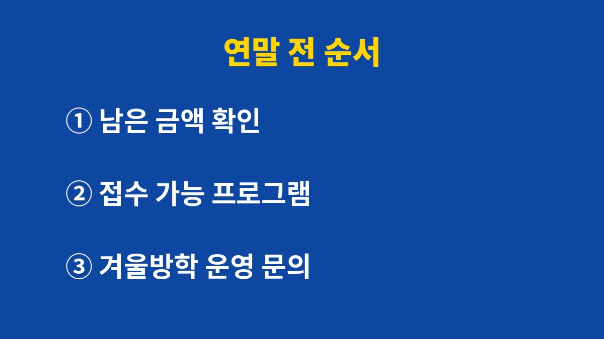

초3 방과후 이용권은 2026년 새 학기부터 초등학교 3학년 전원에게 소득과 관계없이 연 50만 원 한도로 지급되고, 받은 금액은 해당 연도 안에 써야 한다.
11월 중순인 지금 남은 금액이 있다면 연말 전에 쓸 수 있는 프로그램부터 확인해야 한다.
신청 방법과 2027년 확대 여부는 확인한 자료에 없었으므로 시도교육청과 학교 안내를 따로 봐야 한다.
이용권은 현금이 아니라 바우처 형태다.
아이가 수강하는 프로그램 비용만큼 금액이 차감되는 방식이라 통장에 들어오는 돈은 없다.
사용처는 당분간 학교 안 방과후프로그램으로 제한된다.
일부 교육청은 학교와 연계된 공공·비영리기관 프로그램까지 넓힐 계획이고, 교육부도 확대를 검토 중이라는 보도가 있었다.
내 아이 지역이 어디까지 열렸는지는 교육청 공지로 다시 본다.
소득 요건은 없다.
늘봄학교 대상에서 빠진 초3 학생 전원이 대상이다.
세 가지 오해를 풀고 나면 이용권은 학교 방과후 수강료를 대신 내 주는 제도에 가깝다는 점이 보인다.
같은 50만 원이라도 학교마다 열린 프로그램 수와 수강료가 달라 체감하는 폭은 다르다.
처음 이용권을 받은 부모라면 아이 이름으로 남은 금액이 얼마인지부터 보는 것이 출발점이다.
2026년 2월 보도 기준으로 지급 방식은 교육청마다 다르다.
부산·인천·세종·충북·전북·전남은 제로페이 포인트로 주고, 나머지 11개 시도는 새 학기 전에 방식을 정하기로 했다.
그래서 같은 학년이라도 이웃 시도 친구와 확인 방법이 다를 수 있다.
| 항목 | 내용 | 확인 방법 |
|---|---|---|
| 대상 | 초3 전원, 소득 무관 | 학교 안내 |
| 금액 | 연 50만 원 한도 | 교육청 안내 |
| 형태 | 이용권, 수강료만큼 차감 | 지급 방식 확인 |
| 사용처 | 학교 내 방과후프로그램 | 교육청 공지 |
| 기한 | 해당 연도 안 사용 | 연말 전 확인 |

표의 사용처 칸은 가장 자주 바뀔 수 있는 부분이다.
2026년 2월 보도에는 일부 교육청이 연계 기관 프로그램까지 넓힌다는 내용이 있었으나, 이후 실제 범위는 확인하지 못했다.
그래서 이 글의 기준은 시점이 지났을 수 있다고 보고 교육청 공지를 마지막 기준으로 삼아야 한다.
순서의 첫 단계가 잔액 확인인 이유는 이용권을 이미 얼마나 썼는지 부모가 정확히 모르는 경우가 많기 때문이다.
학기 초에 수강한 프로그램이 있다면 그 수강료가 이미 차감되어 있을 수 있다.
잔액이 없다면 이 글의 나머지 순서는 건너뛰어도 된다.

남은 금액을 채우려고 아이가 관심 없는 프로그램에 넣으면 몇 주 만에 흐지부지되기 쉽다.
금액을 다 못 쓰더라도 아이가 이어 갈 수 있는 한 가지가 낫다고 나는 본다.
예를 들어 아이 알림장에 방과후 수강 신청서가 끼워져 있는데 이용권 금액이 얼마 남았는지 모르는 상황이라면, 신청서를 쓰기 전에 잔액부터 확인하는 편이 순서에 맞다.
잔액보다 비싼 프로그램을 고르면 차액을 따로 내야 할 수 있다.
이번 주에 할 일은 하나다.
알림장이나 학교 누리집에서 이용권 안내문을 찾아 남은 금액과 사용 기한을 적어 둔다.
안내문이 보이지 않으면 담임교사나 방과후 담당 부서에 전화해 묻는 편이 빠르다.
2027년에도 이어지는지는 발표를 확인하지 못했으므로 교육청이 내년 안내를 올릴 때 다시 읽어 본다.
올해 안에 쓰지 못한 금액이 다음 해로 넘어가는지도 그때 함께 묻는다.
참고 자료: 교육부 초3 방과후 이용권 지원 발표(언론 보도로 확인, 2026년 2월 보도·2026년 11월 확인)
※ 2026년 기준 공식 자료를 바탕으로 정리한 일반 정보이며, 아이의 발달이나 건강에 걱정이 있다면 소아청소년과 등 전문가와 상담하길 바란다.